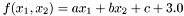
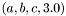

Namespaces | |
| namespace | SpectralPeak |
Classes | |
| class | BadCast |
| class | BoxPeakShape |
| class | ConstantModel |
| class | Exception |
| class | FILELog |
| class | GaussianPeakShape |
| class | InsufficientMemory |
| class | LessByExtractor |
| class | LinearSqrtModel |
| class | LinearSqrtOriginModel |
| class | Log |
| class | LogicError |
| class | LorentzianPeakShape |
| class | NumericalInstability |
| class | OutOfRange |
| class | Output2FILE |
| class | ParameterModel |
| class | PeakParameterFwhm |
| class | PeakShape |
| class | PeakShapeFunctionTemplate |
| class | PeakShapeFunctionType |
| class | QuadraticModel |
| class | RuntimeError |
| struct | SpectrumElement |
| class | SqrtModel |
| class | Starvation |
Typedefs | |
| typedef PeakParameterFwhm < ConstantModel > | ConstantFwhm |
| typedef PeakParameterFwhm < QuadraticModel > | FtIcrFwhm |
| typedef PeakShapeFunctionTemplate < GaussianPeakShape, ConstantFwhm, gaussian > | GaussianPeakShapeFunction |
| typedef std::vector< double > | GeneralizedSlope |
|
typedef vigra::linalg::Matrix < double > | ModelMatrix |
| typedef PeakShapeFunctionTemplate < BoxPeakShape, OrbitrapWithOriginFwhm, orbi > | OrbitrapBoxPeakShapeFunction |
| typedef PeakParameterFwhm < LinearSqrtModel > | OrbitrapFwhm |
| typedef PeakShapeFunctionTemplate < GaussianPeakShape, OrbitrapWithOriginFwhm, orbi > | OrbitrapPeakShapeFunction |
| typedef PeakParameterFwhm < LinearSqrtOriginModel > | OrbitrapWithOriginFwhm |
| typedef std::vector < SpectrumElement > | Spectrum |
| typedef PeakParameterFwhm < SqrtModel > | TofFwhm |
Enumerations | |
| enum | LogLevel { logNO_LOGGING, logERROR, logWARNING, logINFO, logDEBUG, logDEBUG1, logDEBUG2, logDEBUG3, logDEBUG4 } |
Functions | |
| template<typename FwdIter , typename Compare > | |
| PSF_EXPORT std::pair< FwdIter, FwdIter > | findBump (FwdIter first, FwdIter last, Compare comp) |
| void | loadSpectrumElements (Spectrum &s, const std::string &filename) |
| template<typename FwdIter , typename MzExtractor , typename IntensityExtractor > | |
| PSF_EXPORT std::vector < std::pair< typename MzExtractor::result_type, typename MzExtractor::result_type > > | measureFullWidths (const MzExtractor &, const IntensityExtractor &, FwdIter first, FwdIter last, double fraction, typename IntensityExtractor::result_type minimalPeakHeight=0) |
| std::string | nowTime () |
| std::istream & | operator>> (std::istream &is, Spectrum &s) |
| void | throw_invariant_error (bool predicate, const std::string &message) |
| void | throw_invariant_error (bool predicate, const char *message) |
| void | throw_postcondition_error (bool predicate, const std::string &message) |
| void | throw_postcondition_error (bool predicate, const char *message) |
| void | throw_precondition_error (bool predicate, const std::string &message) |
| void | throw_precondition_error (bool predicate, const char *message) |
Typedef to keep the psf interface clean of VIGRA code
| typedef PeakParameterFwhm<ConstantModel> ConstantFwhm |
A FWHM independent of the mass channel.
Definition at line 533 of file PeakParameter.h.
| typedef PeakParameterFwhm<QuadraticModel> FtIcrFwhm |
Fwhm as it occurs in a FT-ICR mass spectrum.
Definition at line 520 of file PeakParameter.h.
| typedef PeakShapeFunctionTemplate<GaussianPeakShape, ConstantFwhm, gaussian> GaussianPeakShapeFunction |
A peak shape function with a gaussian shape static everywhere in a mass spectrum.
You can set the full width at half maximum of the gaussian via the 'a' getter and setter in the PeakShapeFunctionTemplate interface (the 'b' functions are not supported and produce compile time errors if used). Furthermore, you may autocalibrate the parameter calling the calibrateFor() method.
Definition at line 293 of file PeakShapeFunction.h.
| typedef std::vector<double> GeneralizedSlope |
The slope (including the bias) of a multidimensional linear function.
Example: For the function , the generalized slope is  with a bias of 3.0 .
Definition at line 23 of file PeakParameter.h.
| typedef PeakShapeFunctionTemplate<BoxPeakShape, OrbitrapWithOriginFwhm, orbi> OrbitrapBoxPeakShapeFunction |
A peak shape function as it occurs in centroided Orbitrap mass spectra.
The function is similar to the
This function is robust concerning autocalibration, because the autocalibration cannot set the parameter a so, that the function becomes invalid in some mz ranges. That's why we choose a PeakParameter, which is constrained in the origin.
Definition at line 283 of file PeakShapeFunction.h.
| typedef PeakParameterFwhm<LinearSqrtModel> OrbitrapFwhm |
Fwhm as it occurs in an Orbitrap mass spectrum.
Definition at line 511 of file PeakParameter.h.
| typedef PeakShapeFunctionTemplate<GaussianPeakShape, OrbitrapWithOriginFwhm, orbi> OrbitrapPeakShapeFunction |
A peak shape function as it occurs in Orbitrap mass spectra.
The Orbitrap peak shape function is parameterized via a linear sqrt model, which goes through the origin: . You can set the model parameter a via the corresponding getter/setter method in the PeakShapeFunctionTemplate interface. Furthermore, you may autocalibrate the parameter calling the calibrateFor() method.
This function is robust concerning autocalibration, because the autocalibration cannot set the parameter a so, that the function becomes invalid in some mz ranges. That's why we choose a PeakParameter, which is constrained in the origin.
Definition at line 268 of file PeakShapeFunction.h.
Fwhm as it occurs in an Orbitrap mass spectrum. Is zero at zero Dalton.
Definition at line 515 of file PeakParameter.h.
| typedef std::vector<SpectrumElement> Spectrum |
A mass spectrum is a sequence of SpectrumElements ordered by mz.
Definition at line 77 of file Spectrum.h.
| typedef PeakParameterFwhm<SqrtModel> TofFwhm |
Fwhm as it occurs in a TOF mass spectrum.
The specific Time-of-Flight mass analyzer should measure time internally (not velocity or energy), for this peak parameter to be applicable.
Definition at line 528 of file PeakParameter.h.
| enum LogLevel |
| std::pair< FwdIter, FwdIter > findBump | ( | FwdIter | first, | |
| FwdIter | last, | |||
| Compare | comp | |||
| ) |
Finds the first 'bump' in a sequence.
A bump is a range in a sequence containing a (local) maximum and stricly decreasing values to the left and to the right of the maximum.
The smallest possible bump consists of only three elements: .'.
| first | Iterator pointing to the first element of the input sequence. Has to point to an existing element. Else the behaviour is undefined. | |
| last | Iterator pointing to one past the last element of the input sequence. Else the behaviour is undefined. | |
| comp | comp(*iter, *(iter+1)) is called to compare two elements. Think of it as a 'less than' operator <. |
Definition at line 236 of file SpectrumAlgorithm.h.
Referenced by measureFullWidths().
| std::vector< std::pair< typename MzExtractor::result_type, typename MzExtractor::result_type > > measureFullWidths | ( | const MzExtractor & | get_mz, | |
| const IntensityExtractor & | get_int, | |||
| FwdIter | first, | |||
| FwdIter | last, | |||
| double | fraction, | |||
| typename IntensityExtractor::result_type | minimalPeakHeight = 0 | |||
| ) |
Sample the full width at a fraction of the maximum.
Goes through a (sub-)spectrum and measures the full width at a fraction of the maximum for every spectral peak considered pure.
A pure peak fulfills the requirements of a 'bump' and is at least as low as the fraction of its maximum. The true peak maximum is estimated as the most abundant element of the bump.
Note: You should see this really as a measurement in the physical sense, meaning even in the case of an exactly calculatable width, this function may return a slightly different value due to rounding errors and similar effects.
The distance (last - first) may not be negative, else the behaviour is undefined. If (last - first) is zero, an empty vector is returned.
| first | The first Element of the sequence to sample from. | |
| last | One past the last Element of the sequence to sample from. | |
| fraction | Has to be between 0.0 and 1.0, borders included. | |
| minimalPeakHeight | Even negative values are allowed, albeit in general not meaningful. |
| psf::PreconditionViolation | Parameter fraction is out of the required range. |
Definition at line 318 of file SpectrumAlgorithm.h.
References findBump(), psf::SpectralPeak::fullWidthAtFractionOfMaximum(), and psf::SpectralPeak::lowness().
Referenced by PeakParameterFwhm< ParameterModel >::learnFrom().
| std::string nowTime | ( | ) |
The current time as a string.
The exact presentation of the string is locale dependent, but should be the following in most cases:
15:50:57.979
The precision is up to milliseconds.
Definition at line 427 of file Log.h.
Referenced by Log< T >::get().
 1.6.1
1.6.1